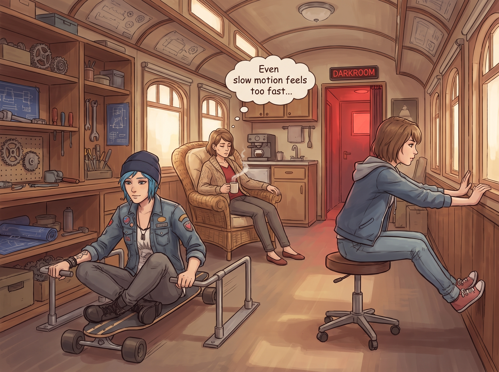

全能支援

被 Chloe 隨口指派「今天所有工具搬運全歸你」後，Miles 原本只當是句玩笑話，直到他把工具遞過去一圈，才真正意識到眼前這幅「全員輪椅級工傷」的奇景有多嚴重。
一邊是盤坐在帶輪滑板上、雙手撐著鐵棍像划獨木舟一樣挪動的 Chloe；一邊是坐在滑輪旋轉矮凳上、靠蹬牆反作用力滑向暗房的 Max；而平日裡優雅凌厲的 Victoria 則陷在鋪了厚羊毛墊的藤椅裡，連端咖啡的動作都像慢動作重播。
年輕小伙子先是一怔，隨即把手裡剩下的工具全部放回工具牆，眼底閃過一絲懂事與敏銳。他捲起袖子，戴上防割手套，主動接管了現場所有的重體力活。
一、主動承擔重載搬運與毛刺清理
看到 Chloe 試圖咬牙站起來去搬地上的三十公斤黃銅圓棒，Miles 連忙快步上前：「Chloe 姐，妳坐著別動！強行發力只會造成二次撕裂。」他扎穩馬步，運用標準的深蹲發力，一人將整箱金屬棒和重型夾具穩穩搬上了車床物料架。
他拿起工業磁力吸鐵棒和長柄掃帚，沿著 Victoria 劃定的紫色標線，把昨晚殘留的金屬毛刺與打磨碎屑徹底清掃乾淨，甚至用吸油棉把車床底座的每一滴油污都擦拭得一塵不染。
二、全坐姿導師的高維度口頭特訓
在 Miles 行雲流水的幹活節奏下，三位行動不便的導師迅速適應了這場「動口不動手」的遠程教學。
Chloe 坐在滑板上哧溜一聲滑到車床旁，手裡拿著棒棒糖充當指揮棒，眼裡滿是欣慰與讚賞：「小子，下刀速度放慢半格！看見那圈飛出來的金屬捲絲沒？對，保持這個進給率，轉速非常漂亮！」
Victoria 舒服地靠在藤椅上，熱水袋捂著小腹，手裡握著綠色激光筆，直接在 Miles 搬運的五金盒上打點：「右側第三個抽屜，按標籤號把 M8 螺栓放進去。動線非常流暢，效率比某位只會用蠻力的汽修工高出至少 30%。」
Max 滑著矮凳從暗房門口探出頭，笑著把剛調配好的版畫油墨推給他：「Miles，等擦完機器，那塊車削好的黃銅浮雕就可以拿來做第一張金屬版畫拓印了。」
三、大天使的專屬戰力補給
中午十一點半，Kate 提著一個巨大的保溫提籃走進車廂。
聞到濃郁的去皮雞胸肉玉米濃湯和剛烤好的芝士蒜香麵包香氣，四個人同時發出了一聲長長的感嘆。
Kate 盛了滿滿一大碗燉得軟爛入味的雞肉濃湯，特意在上面多撒了一把新鮮歐芹碎，雙手遞給滿頭大汗的 Miles，清澈的藍眼睛裡滿是溫柔的笑意：
「辛苦你了，Miles。今天多虧有你在，工坊才能維持這麼棒的運轉呢——這份特大號的起司麵包是專門獎勵你的哦。」
「謝謝 Kate 姐！」Miles 接過熱騰騰的碗，有些不好意思地抓了抓頭，臉上露出了融入這個大家庭後最踏實、最燦爛的笑容。
二號車廂內，四個女孩圍著懂事勤奮的年輕學員，喝著熱湯互相打趣。初秋的陽光穿透氣窗，將這個由傷痛、救贖與真誠共同構築的小小庇護所，照耀得無比溫暖而明亮。